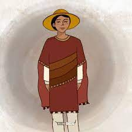

El pequeño pueblo de Santiago de Momoxpan se encuentra entre la ciudad de Puebla y Cholula en México. Hace muchos años, los habitantes contaban leyendas sobre la aparición seres extraños, ruidos de cadenas y metales por las noches, así como la aparición de pequeñas flamas azules que hacían gritar de miedo a quien las viera.
Cierto día, una niña llamada Guadalupe Xomitl que vivía en Momoxpan se encontró con un pequeño niño de huaraches y taparrabo. Ella quedó petrificada al ver la aparición de este pequeño, pero salió un poco de su asombro cuando este le pidió que escarbara debajo del lugar que ella había elegido para poner su petate y dormir.
Ella le preguntó: ¿Por qué me pides eso?
Él le contestó: Porqué mis padres están enterrados ahí y no descansarán hasta que sean llevados a un lugar sagrado.
El niño agregó: Existen muchas personas enterradas por todo el pueblo debido a las peleas y agresiones de los conquistadores en contra de nosotros los indígenas.
Ante tal afirmación Guadalupe no soportó más y se desmayó. Estas apariciones continuaron por algún tiempo hasta que la pequeña se enfermó y al poco tiempo falleció. Otros habitantes narraron que también se habían topado con estas apariciones y confirmaron lo que se decía de Momoxpan; que era un enorme cementerio indígena.
Con el paso del tiempo, los pobladores han encontrado los restos de personas a los que han dado cristiana sepultura para encontrar el descanso eterno y así nacieron algunas de estas leyendas de México.